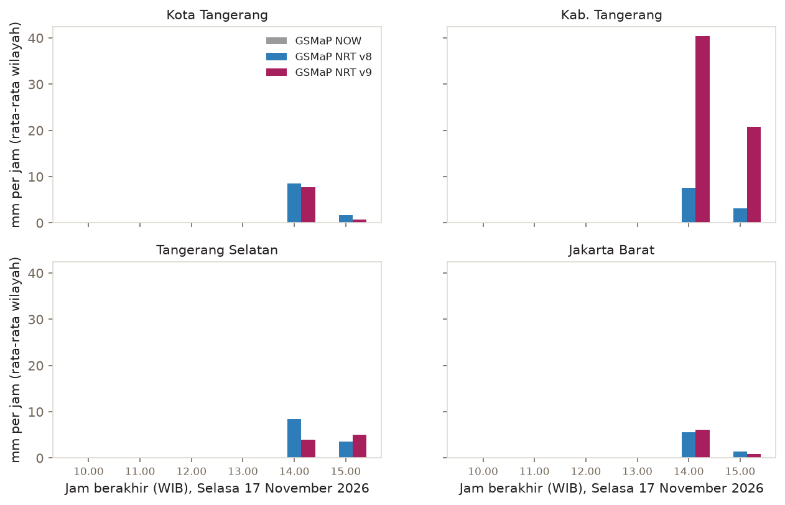
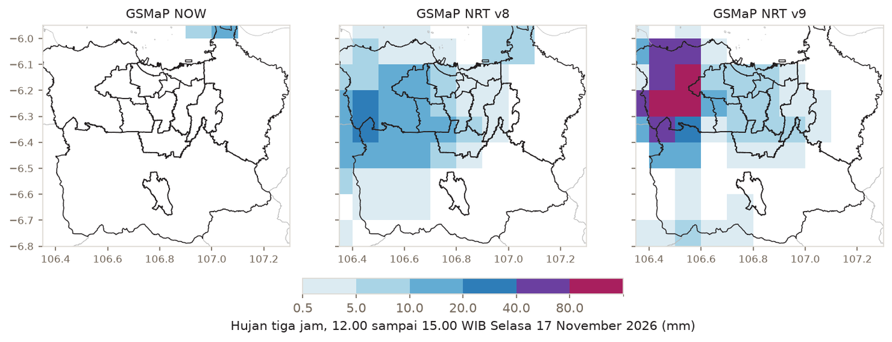

Selasa siang, 17 November 2026, hujan deras disertai angin kencang melanda Tangerang. Jalan MH Thamrin di Kota Tangerang tergenang sekitar 30 cm, dan pohon tumbang di sejumlah titik. Tulisan ini membaca hujan pukul 12.00 sampai 15.00 WIB di Jabodetabek dengan tiga produk satelit GSMaP yang terbit cepat (NOW, NRT v8, dan NRT v9). Menurut NRT v8 dan v9, hujan turun serentak pada pukul 13.00 sampai 14.00 WIB di Tangerang, Tangerang Selatan, Jakarta bagian barat dan selatan, serta Depok. Waktunya cocok dengan berita. Besarnya berbeda jauh antarproduk di Kabupaten Tangerang.

Apa yang tercatat di lapangan
- Sekitar pukul 12.10 WIB, hujan deras dan angin kencang terpantau di Tol Tangerang KM 18 arah Jakarta (Rentak).
- Jalan MH Thamrin di sekitar Halte Bus Kebon Nanas, Kota Tangerang, tergenang sekitar 30 cm pada siang hari. Kemacetan memanjang sampai menjelang gerbang Tol Tangerang–Merak. Berita ini terbit pukul 14.26 WIB (Satelitnews).
- Sekitar pukul 14.45 WIB, pohon berdiameter sekitar 40 cm tumbang menimpa mobil yang melintas di Jalan Imam Bonjol, Panunggangan Barat, Cibodas, Kota Tangerang. Pengemudi luka ringan, dan jalan sempat ditutup dua arah (CNN Indonesia).
- Rekap sementara BPBD Kota Tangerang sampai pukul 15.00 WIB mencatat pohon tumbang di sejumlah titik dan jalan protokol yang tergenang (Satelitnews).
- Di Gading Serpong, Kecamatan Kelapa Dua, Kabupaten Tangerang, pohon besar tumbang menimpa mobil yang diparkir, juga pada siang hari (Warta Tangerang).
Saat tulisan ini dibuat, laporan genangan siang itu dari Jakarta, Bekasi, Depok, dan Bogor belum ditemukan.
Apa kata satelit
| Rata-rata wilayah, 12.00–15.00 WIB (mm) | NOW | NRT v8 | NRT v9 |
|---|---|---|---|
| Kota Tangerang | 0,0 | 10,2 | 8,3 |
| Kabupaten Tangerang | 0,0 | 10,7 | 61,1 |
| Kota Tangerang Selatan | 0,0 | 11,9 | 8,9 |
| Jakarta Barat | 0,0 | 6,9 | 7,0 |
| Jakarta Selatan | 0,0 | 6,1 | 5,8 |
| Kota Depok | 0,0 | 6,7 | 6,8 |
| Kota Bekasi | 0,0 | 3,4 | 5,5 |
| Kabupaten Bogor | 0,0 | 4,0 | 4,6 |
Menurut NRT v8 dan v9, hujan mulai pada pukul 13.00 sampai 14.00 WIB dan melemah pada jam berikutnya. Di Kota Tangerang, rata-rata hujannya 8,5 mm (NRT v8) dan 7,7 mm (NRT v9) dalam jam pertama itu, lalu kurang dari 2 mm pada pukul 14.00 sampai 15.00. Waktunya cocok dengan genangan di Jalan MH Thamrin yang diberitakan pukul 14.26 dan pohon tumbang pukul 14.45. Hujan sekitar 8 mm dalam satu jam, dirata-ratakan atas satu piksel, tergolong sedang. Hujan di titik tertentu bisa jauh lebih deras.
Hujan sekitar pukul 12.10 di Tol Tangerang KM 18 tidak tampak di NRT: kedua versi tidak mencatat hujan di Tangerang pada pukul 12.00 sampai 13.00 WIB.
Di Kabupaten Tangerang, kedua versi NRT berbeda jauh. NRT v9 mencatat inti hujan yang sangat deras di Kabupaten Tangerang, berbatasan dengan sisi barat Kota Tangerang: 112 mm di satu piksel pada pukul 13.00 sampai 14.00, lalu 99 mm di piksel sebelah barat dayanya pada jam berikutnya. Beberapa piksel di sekitarnya, sampai perbatasan Kabupaten Serang dan Kabupaten Bogor, mencatat 45 sampai 76 mm dalam satu jam. NRT v8 di dua piksel terderas itu hanya mencatat sekitar 11 mm per jam. Rata-rata kabupaten dalam tiga jam 61 mm menurut NRT v9 dan 11 mm menurut NRT v8. Sampai tulisan ini dibuat, belum ada berita genangan dari bagian Kabupaten Tangerang itu. Tanpa data pos hujan atau radar, belum bisa dipastikan versi mana yang lebih dekat dengan kenyataan.
GSMaP NOW tidak mencatat hujan di daerah Tangerang sampai pukul 14.30 WIB, termasuk pada paruh kedua tiap jam yang tidak masuk arsip jam-jaman. NOW baru mencatat hujan mulai pukul 14.30, rata-rata sekitar 1 mm per jam dan paling besar 3 mm per jam. Jadi NOW mencatat hujan siang itu sekitar satu jam lebih lambat dan jauh lebih kecil daripada NRT.

Batasan
- Nilai adalah hujan per piksel 0,1° (sekitar 11 km) atau rata-rata kabupaten/kota dari satelit. Hujan di satu titik bisa jauh lebih besar. Jakarta Pusat dan Jakarta Timur lebih kecil dari satu piksel, sehingga tidak dimasukkan ke tabel.
- Ketiga produk tidak dikoreksi dengan pos hujan. Produk Standard untuk tanggal ini baru tersedia sekitar tiga hari kemudian. GSMaP NOW pada tabel dan peta hanya memakai paruh pertama tiap jam.
- Tulisan ini hanya memakai data sampai pukul 15.00 WIB. Hujan setelah itu tidak dibahas.
- Tulisan ini tidak memakai data pos hujan, radar cuaca, atau tinggi muka air sungai dan saluran.
Rujukan
- Rentak, 17 November 2026. Hujan deras dan angin kencang terjang Tol Tangerang arah Jakarta, pengendara diminta waspada.
- Satelitnews, 17 November 2026. Jalan MH Thamrin Kota Tangerang tergenang, macet parah terjadi.
- CNN Indonesia, 17 November 2026. Hujan dan angin kencang, pohon tumbang timpa mobil di Tangerang.
- Satelitnews, 17 November 2026. Hujan deras di Kota Tangerang picu pohon tumbang di 7 titik.
- Warta Tangerang, 17 November 2026. Hujan disertai angin kencang, pohon tumbang di Gading Serpong timpa mobil hingga ringsek.
- JAXA. GSMaP NOW, NRT v8, dan NRT v9 (tanpa koreksi pos hujan), per piksel dan rata-rata per kabupaten/kota, diolah HESLab.